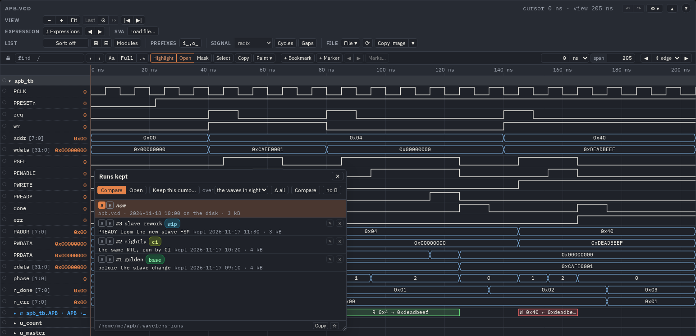
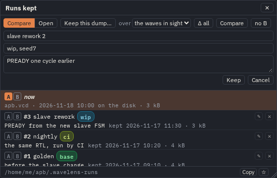
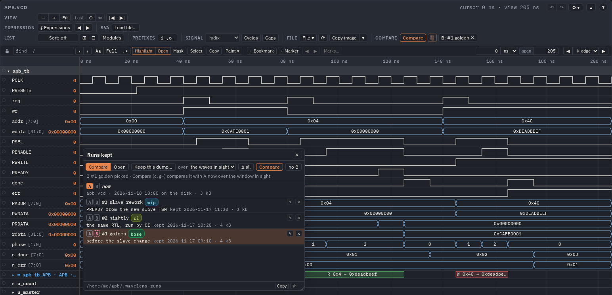
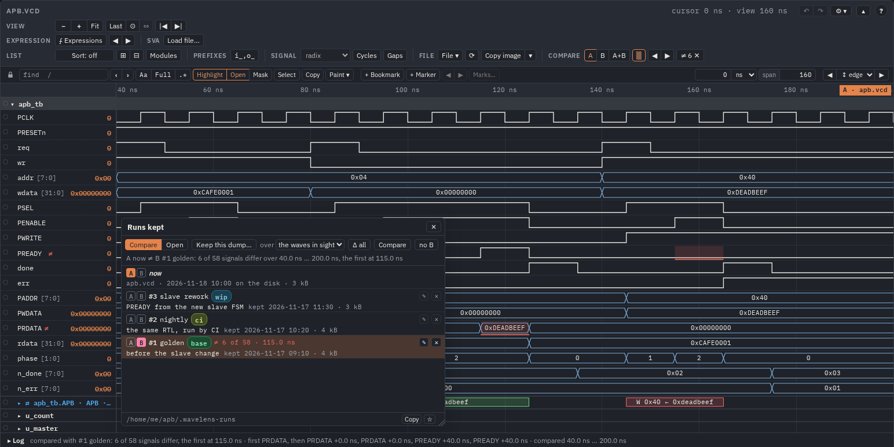
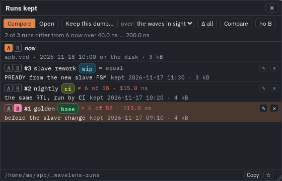
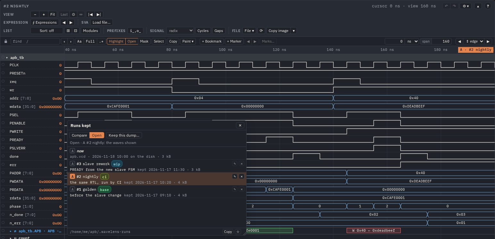
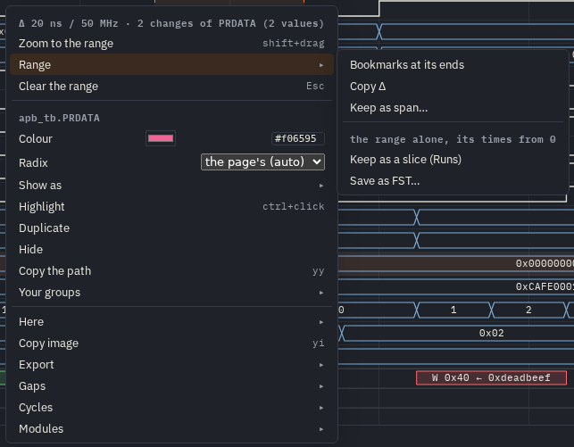
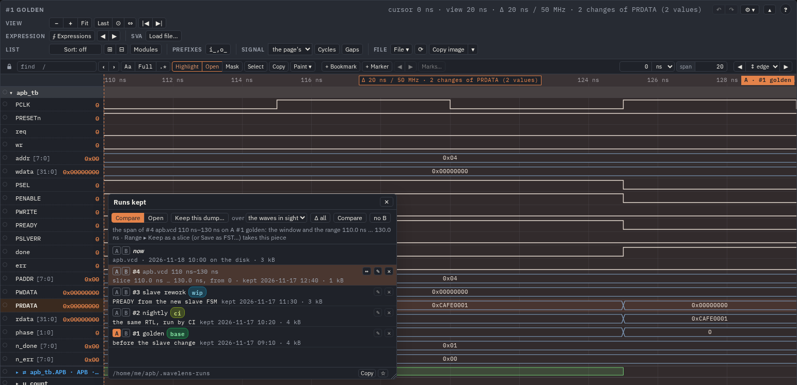
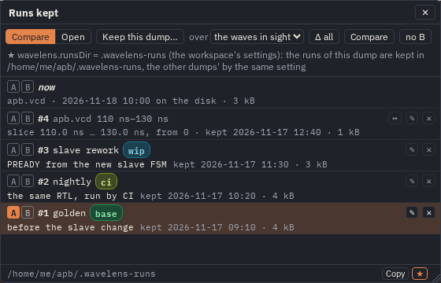

Runs: keep, browse, compare, slice
A simulator writes its dump over the last one: once you run again, the run before is gone. In VS Code the Runs panel keeps the runs you want to look back at, by hand, with a name, tags and a comment; it shows any of them in the tab with your view kept, compares two of them over the window in sight, and cuts a piece of the waves out as a run of its own (a slice) to compare it with another piece.
The example
The pictures are of a VS Code tab of the APB example (make examples, apb.vcd) with three runs kept, made
by tests/guide_shots.py with the real sva runs:
- #1 golden (tag
base) and #2 nightly (tagci): the example's dump as it is; - #3 slave rework (tag
wip): run B of the compare guide — the read at 115 ns returns0xDEADBEEF,PREADYof the write at 155 ns comes 10 ns later,PSLVERRis not in the dump.
The dump on the disk (now) is the rework's: the simulation after the change. The question the panel answers: what changed since the golden run, and which run was the first to change.
The panel
Runs… in the bar's File ▾ (g u), the command WaveLens: The runs kept of this
dump, or its icon in the tab's title opens it. It belongs to the tab: a page in a browser has no Runs panel (the toast says so;
in a shell the same runs are sva runs, below). The panel moves by its header and sizes by its corner,
as the Modules panel does; Esc closes it.

Each row has two lines:
- The first: the letters A and B (buttons, lit on the row that has the role), the run's number, its name and its tags. A name that is only the dump's (what a keep without a name gives) is muted: it does not tell the runs apart. Each tag has a colour of its own, made from its text: the same tag has the same colour on every row, every day.
- The second: the comment's first line in the text's colour (the whole comment in the row's tooltip), then, muted, what the run is — when it was kept (and of a dump of 12:03 when the dump was older than the keep), its size, its test cases, a slice's times.
On the right of a run's row: ✎ (e) changes its name, tags and comment; ✕
(Delete) removes the run and its file, after VS Code asks. The panel's header counts the runs of other dumps when the
directory is shared (below). A run kept meanwhile in a shell or by an agent shows up at once
(runs.json is watched).
Keep this dump…

The dump goes into the runs' directory — .wavelens-runs beside the dump unless set otherwise — as an
FST: a VCD converted as sva fst converts it (the FSM state names of tb.types.json beside it kept), an FST
copied. The run is listed in runs.json there. A directory the keep made, or one named .wavelens-runs, gets a
.gitignore of *, so git leaves the runs out. A VCD is written in blocks of 1 MiB of changes: a window late in
a long run reads the blocks from there on, as fast as a window at its start.
Your spans with a label go with the run as its test cases; with none, the cocotb marks beside the dump
(wavelens.marks.json) do.
Compare: pick A and B, then Compare
Two rows have a role. A is the waves shown in the tab — now at first. B is the run compared with A. Choosing a row only picks it; nothing is read until you press Compare.
- Click a run (or Enter on it, or move with ↑ ↓ in the list): it is picked as B, its letter in a dashed box. The bar shows B: #1 golden ✕ and lights Compare. Anywhere on the waves, ] r / [ r pick the next (older) / previous run as B, with the panel open or not.
- Choose the window in over: the waves in sight, or one of your spans (a test case's spans among them).
- Compare — the panel's, the bar's, c in the list or g = — compares A with B over
that window. Only that window of the two is read:
sva runs diffon the host, then B's values of the signals that differ there (at most 32 MB). A run of gigabytes costs its window, not its size.


From here everything of the compare guide works: ]d [d to the next difference, d flips the waves between A and B, D both over each other, ▒ (gb) the red mask off and on. The view you chose (B, A+B) stays from one run to the next.
- The window moved. Zoom or pan and nothing is compared again: the bands stay those of their window, the time outside it shaded, and Compare is lit until you press it again.
- No B. no B (x), the bar's ✕, or a click on the lit B drops the compare: the waves only. A click on a B that is only picked while another run is compared drops the pick and keeps the compare.
- A run as A. w on a row (or its A) picks it as A. Compare then reads that run's waves into the tab — the window, the rows and their order, colours, groups, markers, spans and panels kept — and compares B with it. Two kept runs are compared with each other this way; now can be B while A is a run.
- A new simulation. The dump read again (⟳, R) is now, and A is now again. The panel stays open and B stays picked: Compare compares the new dump with it.
Δ all: which run differs
Δ all (a) asks every run at once: how many signals differ from A in the window, and the first difference, on each run's row.

Red: some signals differ; = equal: none; not in this window: the run does not cover it. Numbers of another window or another A than the one now are greyed, with their window in their text. To ask "which run left the golden behaviour", make the golden run A first (w, Compare), then Δ all.
Open: looking through the runs
To look through the runs one after another without comparing, switch the panel from Compare to Open (o in the list). A row chosen — a click, Enter, its A — opens its waves in the tab, the view kept as w keeps it. Nothing is compared: B, Δ all and the compare's tools are gone, the B of before is dropped, and the status line starts with Open ·.

PSLVERR, which the dump of now has not: the row is back.- ↑ ↓ (Home End PgUp PgDn) held down open only the row they rest on, 0.6 s after they stop: each run is a read of its file.
- ] w / [ w anywhere, in either mode, open the next / previous one at once: now, then the runs, round again. A picked B stays picked meanwhile.
- A run without a row of yours (a signal added since) says which; the row comes back, with its colour, radix and place in your groups, on the next waves that have it. A run shorter than the window says where it ends.
- The mode is kept with the view (
runsModein a saved state); ]r [r (a B asked) switch back to Compare.
Test cases
A run keeps its test cases, a name and a window each: your spans with a label when it was kept, else cocotb's
wavelens.marks.json beside the dump (cocotb tests). The row says how many
(5 cases).
Choose one of your spans in over whose label is the name of a case (the choice says · a case; the
TC3 before a cocotb label and the · PASS after it do not count): each run is then compared over its case
of that name, wherever it is in the run — the cases before it may have taken longer — over the shorter of the two, said in the status.
In Δ all a run without that case has an error on its row; Compare of such a run compares over the span as it is and says
no case … in it. In the shell:
sva runs diff tb.vcd --case test_burst.
Slices: two pieces of the waves compared
A slice is a piece of the waves kept as a run of its own, its times from 0: its first sample is 0. Two slices — two bursts, two packets, two calls of a task, of one run or of two — compare like two runs and line up on their first samples, so a difference is a difference of behaviour, not of when it happened.
- Make a range over the piece (ctrl+drag), then the right button over it: Range ▸ Keep as a slice (Runs). The slice is of the waves shown: the dump, or the run that is A.
- The panel opens on its row: slice 110.0 ns … 130.0 ns, from 0, named apb.vcd 110 ns–130 ns until you rename it (✎).
- Compare it like any run: one slice A (w), the other B, Compare. A slice and a whole run (or the dump) compare at the slice's place in it; the status says so (B's 110 ns … 130 ns: a slice at its place).

The same piece of another run. ↔ on a slice's row (s in the list) puts the window and the range of the waves shown on the slice's start and end — where it was cut from, in A's time. Show another run (A), press ↔, and Range ▸ Keep as a slice takes the same piece of that run. A span past an end of A is cut to A; one wholly outside A is said and not applied.

While a slice is A, the view's times go with it: from the dump to its slice the window, the cursor, markers, bookmarks and spans move by the slice's start, and back again on the way out (slice to slice: both from 0, nothing moves).
The runs' directory and ★
The panel's last line is the directory the runs of this dump are in; its path can be selected, Copy copies it, its tooltip says where it comes from.
- By default:
.wavelens-runsbeside the dump. - The setting
wavelens.runsDir: another directory, relative to the workspace folder or absolute;~and${userHome}are your home,${workspaceFolder}the dump's workspace folder. A folder of yours without a.gitignoregets one of the runs' files only (*.fst,*.part,runs.json*). One directory for every dump lists this dump's runs and counts the others in the header. - ★ writes that setting with the directory of now — in the workspace's settings when the dump is in a workspace folder, else in yours — so the dumps opened later keep their runs there too. A lit ★ means the setting names it; a click on it clears the setting (the runs kept stay where they are).

When the directory changes under an open tab (a ★ in another tab, the setting edited), its runs are others: that tab drops its compare with a run, its picks and the Δ numbers, shows the dump of now if a run was shown, and says so.
The panel's keys
| Key | In the list |
|---|---|
| ↑ ↓ Home End PgUp PgDn | go through the rows: pick one as B (Open: open the row they rest on) |
| Enter | pick the row as B (Open: open it) |
| w | pick the row as A (Open: open it) |
| c | Compare: A opened when another is picked, then A and B compared over the window |
| a | Δ all |
| x | no B: the waves only |
| o | the mode: Compare or Open |
| s | a slice's span on the waves shown |
| k | Keep this dump… |
| e | the run's name, tags, comment |
| Delete | remove the run and its file (asked first) |
| Esc | close the form, else the panel |
On the waves: g u the panel, g = Compare, ]r [r the next / previous run as B, ]w [w the next / previous run shown as A, and the compare's ]d [d d D gb.
From the shell and for agents
The panel runs sva runs on the host; the same directory works from a terminal (VS Code's wavelens.runsDir
of the workspace folder above the dump is read too):
sva runs keep apb.vcd --name golden --tags base --comment "before the slave change"
sva runs list apb.vcd
sva runs diff apb.vcd --from 40ns --to 200ns --limit 2
apb.vcd against 3 runs over 40 ns … 200 ns:
#3 slave rework: equal (58 signals)
#2 nightly: 6 of 58 signals differ, first at 115 ns (apb_tb.PRDATA); 3 of the run not in the dump
apb_tb.PREADY apb_tb.PRDATA … 4 more
#1 golden: 6 of 58 signals differ, first at 115 ns (apb_tb.PRDATA); 3 of the run not in the dump
apb_tb.PREADY apb_tb.PRDATA … 4 more
sva runs diff DUMP --against golden: a run is A instead of the dump;--run nowadds the dump as a B;--case NAMEa test case;--jsonfor scripts. Exit status 0 every run equal, 1 one differs.sva runs keep DUMP --from 4us --to 6uskeeps a slice;sva fst DUMP --from 4us --to 6us --zero --out burst.fstwrites one as a file.sva runs set RUN …,sva runs rm RUN,sva runs path RUN(its FST, forsva diffandsva vcd).- An agent has
wave_runs(AI agents):list,keep,set,rm,diffwithcaseandagainst— "which run first broke test_x" is one call.
All the options: USAGE.md § The runs kept of a dump and § The runs kept, in the shell.